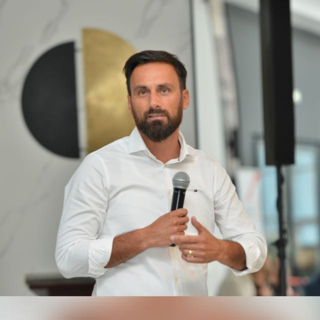

DECLARAȚIE DE VIZIUNE
CINE SUNTEM? Biserica Vertical se dorește a fi o biserică relevantă, multigenerațională, pasionată de Dumnezeu și de oameni!
CARE ESTE MISIUNEA BISERICII? Să îi conducem pe oameni în a deveni ucenici devotați lui Isus!
